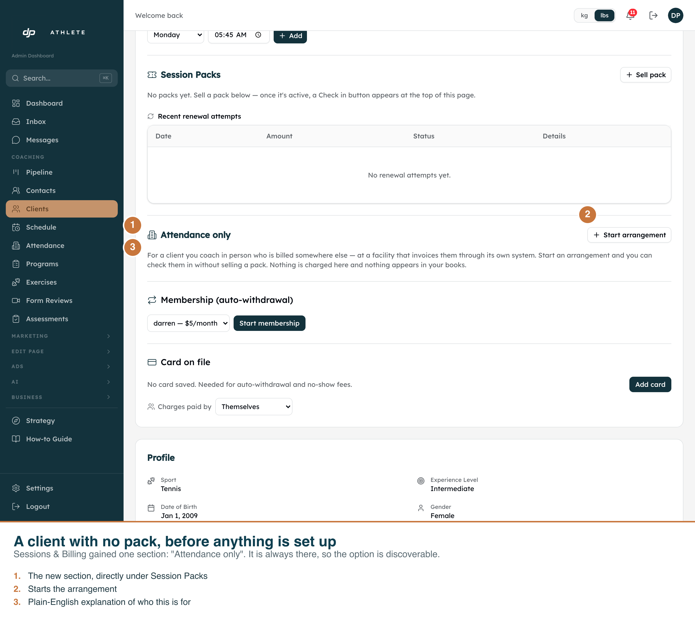
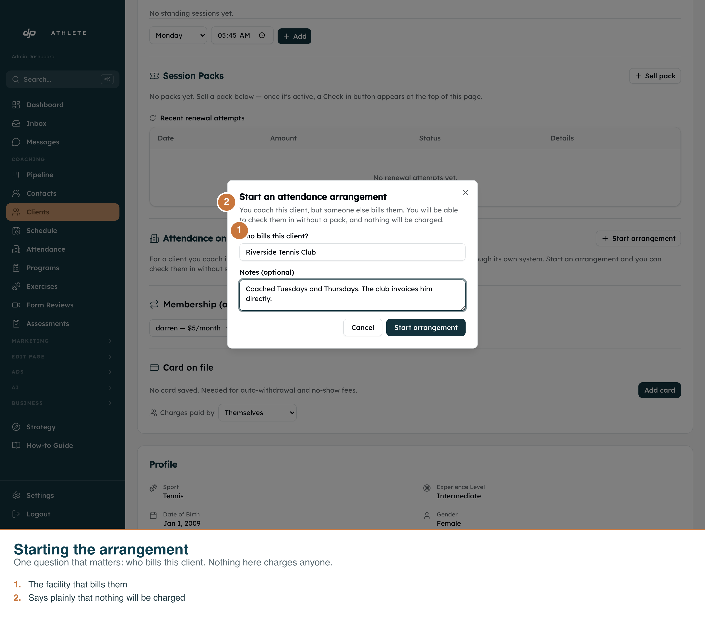
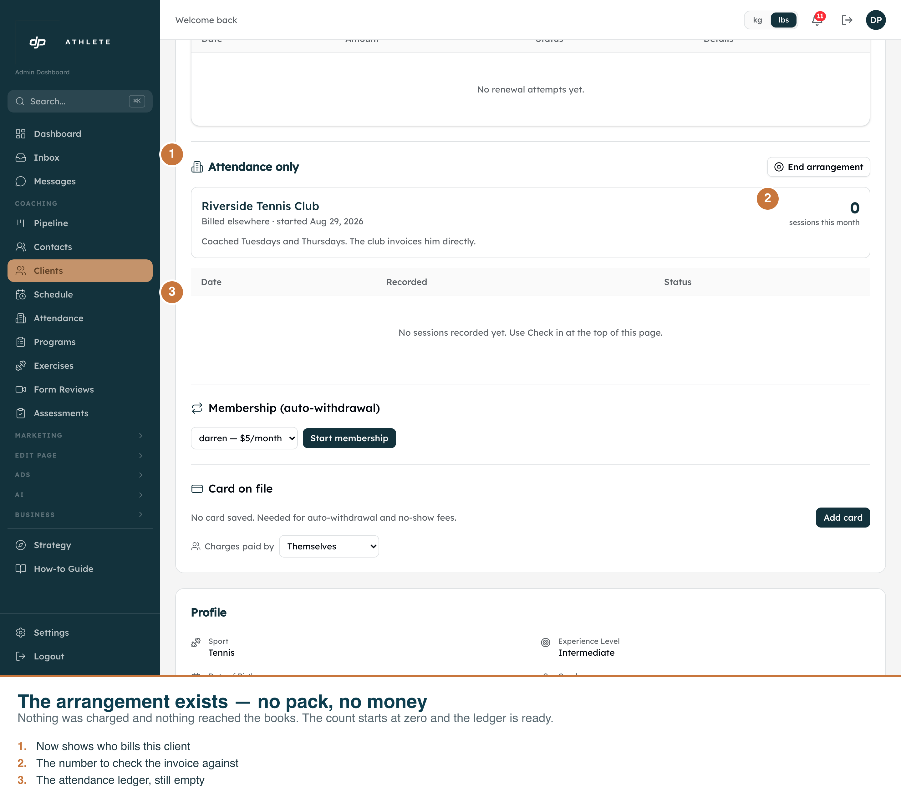
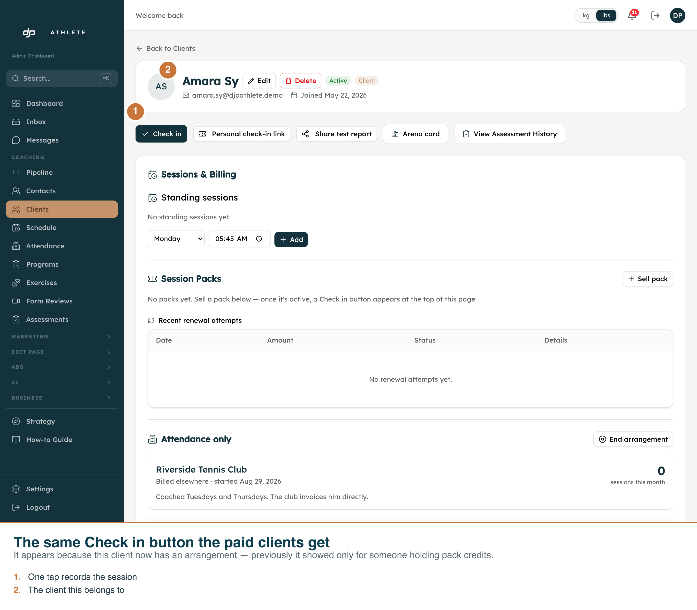
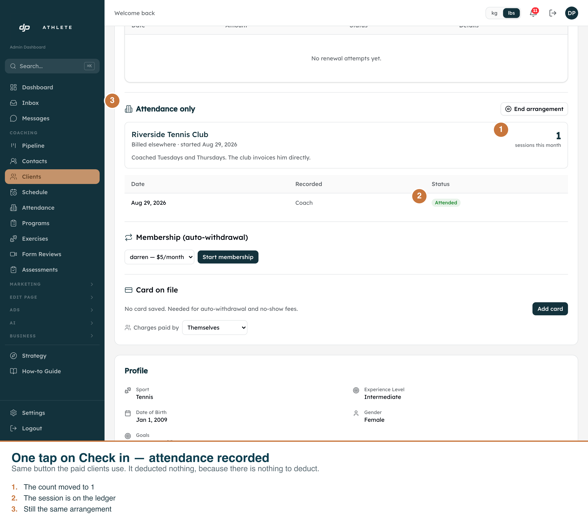
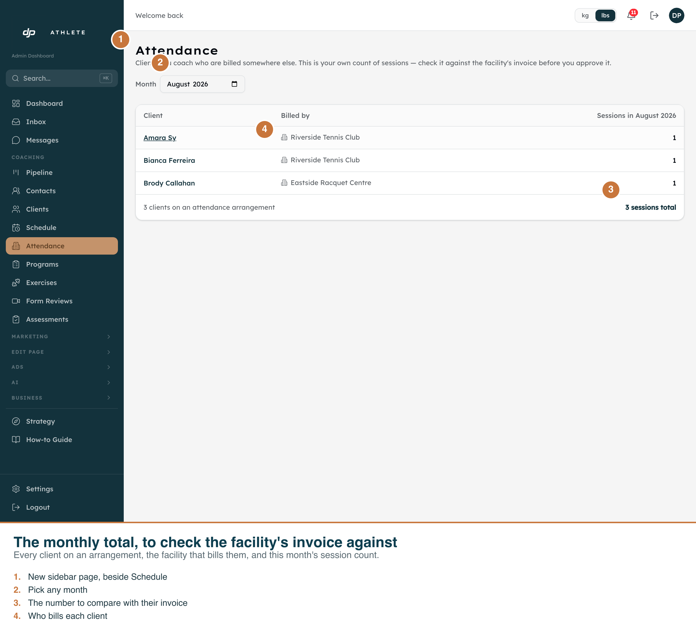

Clients coached in person whom a partner facility bills through its own system. Captured against the real admin app on the dev clone, 29 Aug 2026.
A client with no pack can be checked in. Every arrangement below was created through the real dialog on the real client page, and every check-in is a real click on the real button. Nothing was seeded.
The check-in burned no credit. The session_checkins row is read back out of
the database by the capture script and asserted field by field:
credit_delta = 0, client_package_id = null, method = coach_tap.
The script fails if any of those is wrong.
Nothing reached the books. An arrangement has no price and never touches
client_packages, so the bookkeeping income adapter, the renewal-reminder cron and Stripe
never see it.






PORT=3050 npm run dev, then
APP=http://localhost:3050 npx tsx scripts/capture-attendance-arrangements.ts .env.local.
Add --clean to remove the arrangements and check-ins it created.